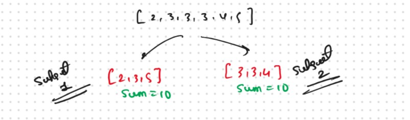
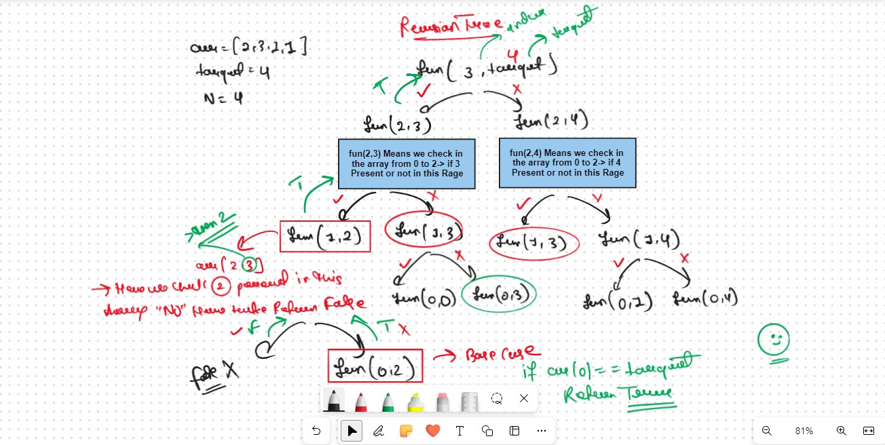
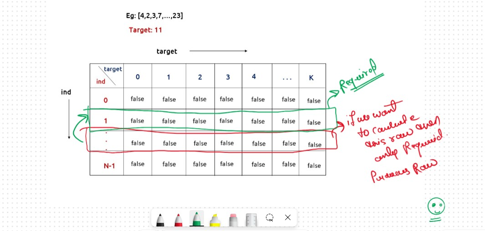

JB TAK FODEGA NHI .... TB TK CHODEGA NHI .... (MAANG)


DPL15 Partition Equal Subset
We are given an array ‘ARR’ with N positive integers. We need to find if we can partition the array into two subsets such that the sum of elements of each subset is equal to the other. If we can partition, return true else return false.
This question is a slight modification of the problem discussed in LDP14. We need to partition the array(say S) into two subsets(say S1 and S2). According to the question:
Algorithm / IntuitionNow remaining Entire 👇 Process will Be Same As Like in DPL14
what a Subsequence/Subset?
A subset/subsequence is a contiguous or non-contiguous part of an array, where elements appear in the same order as the original array.
For example, for the array: [2,3,1] , the subsequences will be [{2},{3},{1},{2,3},{2,1},{3,1},{2,3,1}] but {3,2} is not a subsequence because its elements are not in the same order as the original array.
In this Question first thing Comes into the My Mind is Generate all the Possible Subsecquance and check if any sum(subset) == k or not
I Have Two Option for this Question
But in this Problem we Just Required the Only One Subset no Need to Check All the Subsetst thats why I go with the Recursion Approch
Recursice Approch
Steps to form the Recursive SolutionStep 1: Express the problem in terms of indexes.
So, we can say that initially, we need to fun(n-1, target) which means that we need to find whether there exists a subsequence in the array from index 0 to n-1, whose sum is equal to the target. Similarly, we can generalize it for any index ind as follows:
The Recursive Function is
Step 2: Try out all possible choices at a given index.
We need to generate all the subsequences. We will use the pick/non-pick technique as discussed in, That we All Ready Learn in the Recursion Series.
We have two choices:Note: We will consider the current element in the subsequence only when the current element is less or equal to the target.
The final pseudocode after steps 1, 2, and 3:
Recursion Tree 
.png)
.png)
Sb Mai He Kru ...
Khud Bhi Kr le Khuch ..... Nalayk
Time & Space Complexity
Time Complexity: O(2^N)Reason: Exponential Time we find out the all the Possible Path
Space Complexity: O(N)
Reason: We are using a recursion stack space(O(N))
Memoization Approch
If we observe in the recursion tree, we will observe a many number of overlapping subproblems. Therefore the recursive solution can be memoized for to reduce the time complexity.
Steps to convert Recursive code to memoization solution:
.png)
.png)
Sb Mai He Kru ...
Khud Bhi Kr le Khuch ..... Nalayk
Time & Space Complexity
Time Complexity:O(N*K) + O(N)Reason: There are N*K states therefore at max ‘N*K’ new problems will be solved and we are running a for loop for ‘N’ times to calculate the total sum.
Space Complexity: O(N*K) + O(N)
Reason: We are using a recursion stack space(O(N)) and a 2D array ( O(N*K)).
Tabulation Approch
Tabulation is a ‘bottom-up’ approach where we start from the base case and reach the final answer that we want and Memoization is the Top-down Approch.In Tabulation Approch We Just Creat a DP Array Same as Memoization and Simply Convert the Recurance Relation into the form of the Looping
Steps to convert Recursive Solution to Tabulation one..png)
.png)
Sb Mai He Kru ...
Khud Bhi Kr le Khuch ..... Nalayk
Time & Space Complexity
Time Complexity: O(N*K) +O(N)Reason:There are two nested loops that account for O(N*K) and at starting we are running a for loop to calculate totSum.
Space Complexity: O(N*K)
Reason: We are using an external array of size ‘N*K’’.
Space Optimization
If we closelly Observed if any Tabulation Approch we used the Some Limited Stuff like: dp[ind][target] = dp[ind-1][target] || dp[ind-1][target-arr[ind]] for the finding the our ans then definetly here Spaced Optimization is Possible in that types of Problems. Always Remember
Golden Rule
.png)
.png)
Sb Mai He Kru ...
Khud Bhi Kr le Khuch ..... Nalayk
Time & Space Complexity
Time Complexity: O(N*K) +O(N)Reason: There are two nested loops that account for O(N*K) and at starting we are running a for loop to calculate totSum.
Space Complexity: O(K)
Reason: We are using an external array of size ‘K+1’ to store only one row.